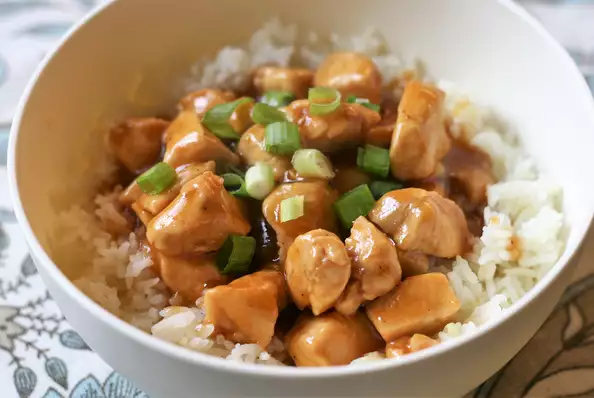

Whiskey Chicken

Description
This recipe is my family's favorite. It's sweet and spicy and easy
to make.
Ingredients
-
2 skinless, boneless chicken breast halves - cut into 1/2 inch
pieces
- 2 tablespoons soy sauce
- ¼ teaspoon garlic powder
- 1 cup pineapple juice
- 3 tablespoons bourbon whiskey
- ⅛ teaspoon ground black pepper
- 1 tablespoon brown sugar
Steps
-
Saute chicken in a large skillet over medium high heat until
cooked through (no longer pink).
-
In a small bowl, combine the soy sauce, garlic powder, pineapple
juice, whiskey, pepper and sugar. Stir until sugar is dissolved
and pour over chicken. Let simmer for 10 to 15 minutes, or until
sauce is thickened to taste.